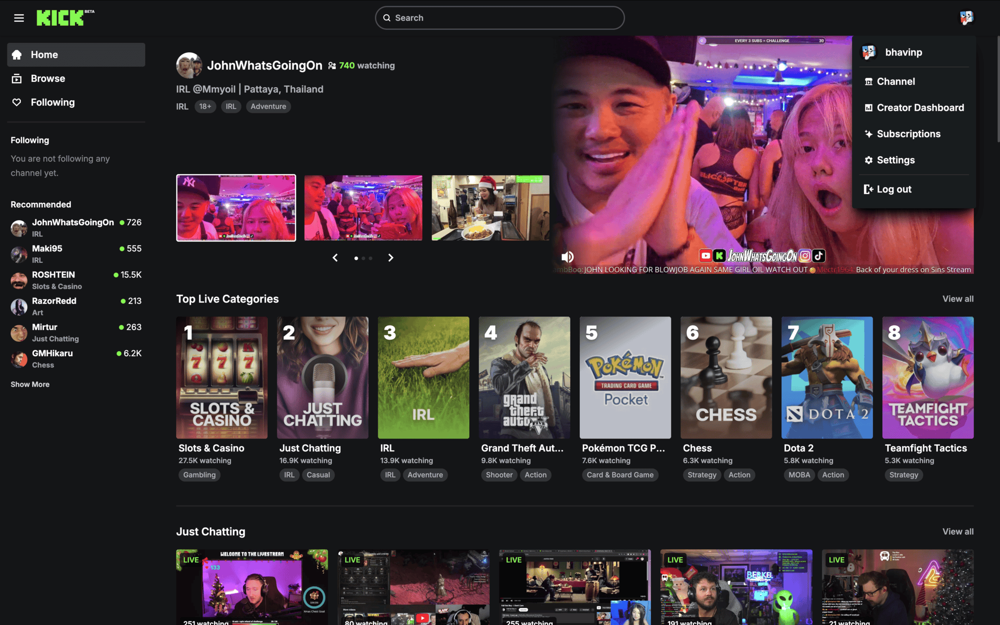
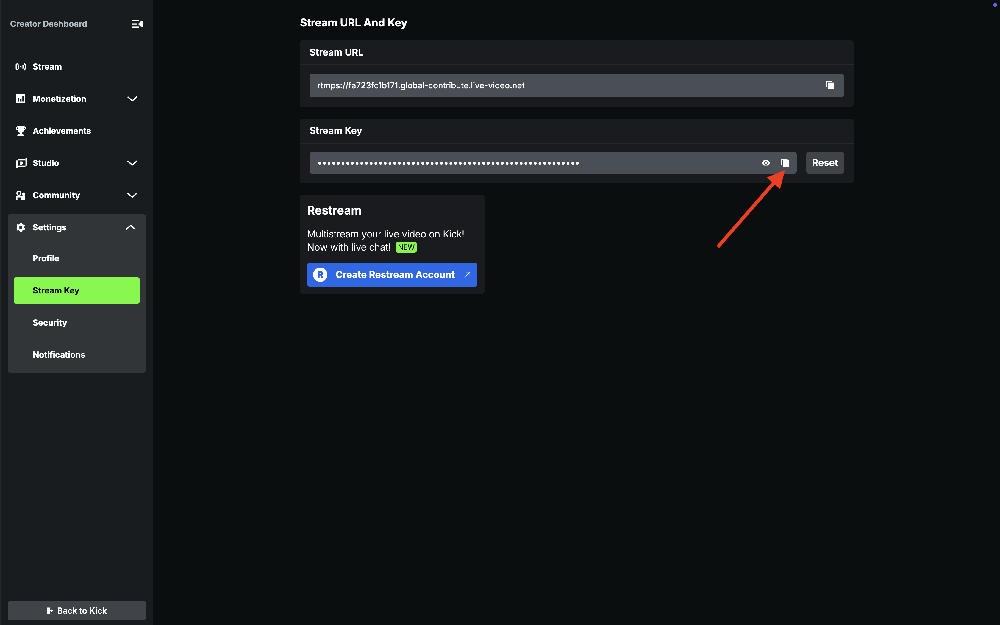
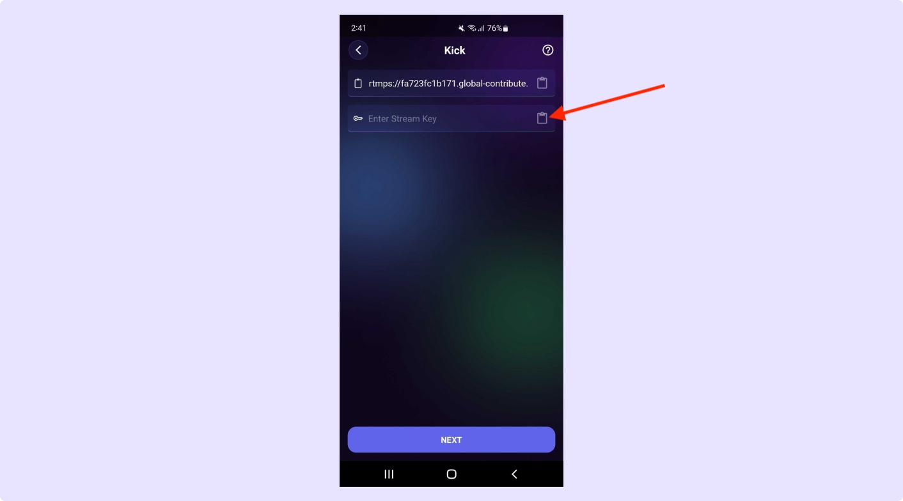

Log in to Kick, click on your profile, and navigate to the Creator Dashboard.
How to Stream Live on Kick with Screen Recorder
Welcome to Screen Recorder, Let’s get started with a step-by-step guide to unlock your streaming potential.
Step 1: Go to Kick and login to your streaming account. Click on Profile and go to Creator Dashboard.

Step 2: Go to Settings > Stream Key. Copy Stream URL and Stream Key
In the Settings menu, navigate to Stream Key and copy your Stream URL and Stream Key.

Step 3: Open Kick Platform in our app and paste Stream URL and Stream Key. Enjoy streaming!
Paste the copied Stream URL and Stream Key into the Screen Recorder app, and enjoy live streaming!
